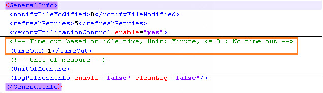
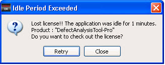

You can specify an idle time after which
Calibre DefectReview releases its license. This is also known as
a timeout.
The timeout is set in the GeneralInfo/timeOut node in the dat-ini.xml file.
Figure 1. timeOut
Node
Procedure
- In a text
editor, open the dat-ini.xml file.
- In the dat-ini.xml file,
set the value of the timeOut node to a positive number and save the
file. For example if you set it to 1, after 1 minute of inactivity,
Calibre DefectReview times out and displays a dialog box (shown
in the following figure). Before this message is displayed, the
license for Calibre DefectReview is released.
Figure 2. Time
Out Message
If the Layout Server is running, then the process terminates
and all states corresponding to layout image generation are reset.
Note: If the value of the timeOut node is negative,
then timeout does not occur.